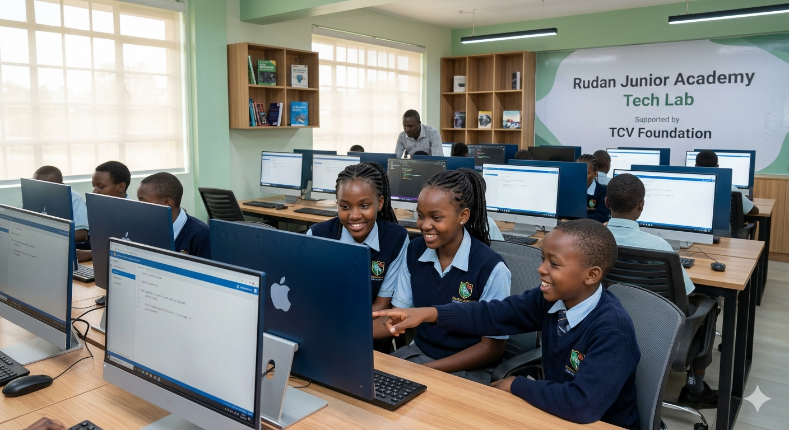

Bridging the Digital Divide: Launching the Rudan Junior Academy Tech Lab
At The Continent Ventures Foundation, we recognize that digital literacy is no longer a luxury—it is a fundamental right. We are proud to announce the official commissioning of the modern Technology Lab at Rudan Junior Academy in Nairobi. This initiative represents a milestone in our commitment to providing sustainable educational infrastructure for the next generation of African innovators.

The new facility is equipped with high-performance workstations, secure networking infrastructure, and specialized educational software. By integrating technology into the daily curriculum, we are ensuring that students move beyond basic computer literacy into the realm of complex problem solving.
Future-Proofing Through AI & ICT Integration
The integration of Information and Communication Technology (ICT) with Artificial Intelligence (AI) serves as a force multiplier for early childhood education. At Rudan Junior Academy, this lab is not merely a room full of computers; it is an incubator for cognitive development. By introducing AI-driven educational tools, learners benefit from:
- Adaptive Learning Pathways: AI algorithms personalize the pace of instruction, identifying individual strengths and addressing learning gaps in real-time.
- Enhanced Critical Thinking: Students engage with logic-based coding and algorithmic thinking, fostering a mindset geared toward systematic analysis.
- Global Competitiveness: Early exposure to AI frameworks ensures our learners are prepared for a global labor market where digital fluency is the primary currency.
Sustainable Impact
Learners will benefit from a transition from theoretical knowledge to practical application. This lab supports our broader mission of creating a holistic educational environment. When combined with our nutritional and healthcare initiatives, the Tech Lab ensures that a student’s physical wellbeing is matched by their intellectual preparedness.
This project follows our successful implementation of role-based administrative systems at the school, further digitizing the entire learning ecosystem. We invite our partners to witness how these strategic investments are creating a resilient, tech-savvy generation in the heart of Nairobi.
© 2026 The Continent Ventures Foundation. All Rights Reserved.